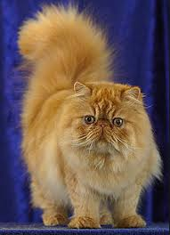
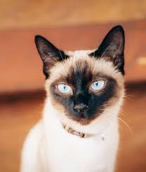
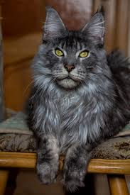

El Gato Persa: Destaca por su pelaje largo y abundante, y su cara plana. Son gatos muy tranquilos, cariñosos y que disfrutan de la vida en interiores. Requieren cepillado diario para evitar nudos en su pelo.
El Gato Siamés: Famosos por sus ojos azules intensos y su pelaje claro con extremidades oscuras. Son extremadamente vocales y comunicativos, les encanta estar acompañados y son muy juguetones.
El Maine Coon: Es una de las razas más grandes de gatos domésticos. Son conocidos como "gigantes gentiles" debido a su personalidad dócil. Tienen un pelaje resistente al agua y son excelentes cazadores.


